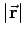
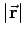
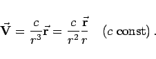

Inhalt Index DeskTop Bronstein

 Vektoranalysis und Feldtheorie Grundbegriffe der Feldtheorie Vektorfelder Wichtige Fälle vektorieller Felder
Vektoranalysis und Feldtheorie Grundbegriffe der Feldtheorie Vektorfelder Wichtige Fälle vektorieller Felder


Das sphärische Vektorfeld ist der Spezialfall des zentralen Vektorfeldes, in dem die Länge des Vektors  nur vom Abstand  abhängt (s. Abbildung).
nur vom Abstand  abhängt (s. Abbildung).
Beispiele sind das NEWTONsche und das COULOMBsche Kraftfeld einer Punktmasse bzw. einer elektrischen Punktladung:
|  | (13.14) |
Der Spezialfall eines ebenen sphärischen Vektorfeldes wird Kreisfeld genannt.